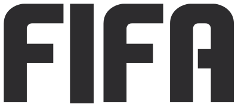
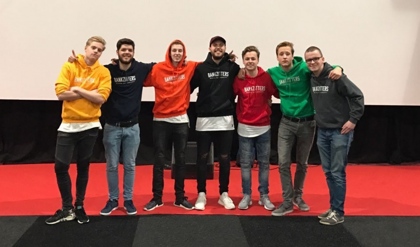

In 2019 op de datum 27 september kwam Het spel uit met de naam fifa 20. Het is eertse fifa spel was FIFA International Soccer ook wel bekend als FIFA 94.
Fifa is een heel bekend spel en heel veel mesen spelen het over de hele wereld. Je kan het voor de lol spelen maar je kan ook no lifen.
De meeste mensen zitten daar tussen in omdat je het niet meer voor je lol kan spelen en no lifen is niks aan :).
FIFA Wiki
FIFA (in oudere edities bekend als FIFA Soccer of FIFA Football) is een reeks voetbalsimulatiespellen waarmee de speler met een land of club kan spelen.
De serie bestaat sinds 1993 en wordt ontwikkeld door EA Sports. Ook zijn er edities van WK's.

Ieder jaar in september verschijnt een nieuwe versie van het spel met updates van ploegen, competities en spelers, en probeert men de kwaliteit van het spel te verbeteren.
Electronic Arts heeft het contract met FIFA verlengd en mag nog tot 2022 FIFA-spellen maken.
FIFA Youtubers
In fifa heb je heel veel youtubers die video's opnemen voor hun youtube kanaal, je hebt bijvoorbeeld een Slotta of de Bankzitters of Fc Roelie er zijn er genoeg.
De meeste video's die ze maken zijn pack openings of weekend league rewards. Ze gaan ook heel vaak live en spelen hun weekend league live.
Als je een goede fifa speler fifa ziet spelen kan je zelf ook veel beter worden.

Als fifa youtuber heb je het goed voor elkaar want het heel goed bekeken dus de centjes komen ook binennstromen.